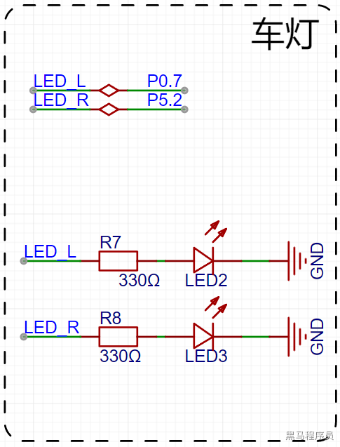
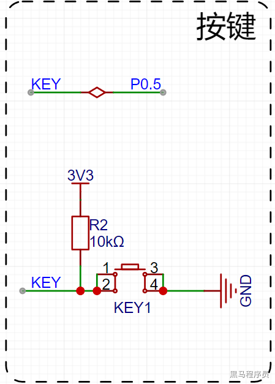
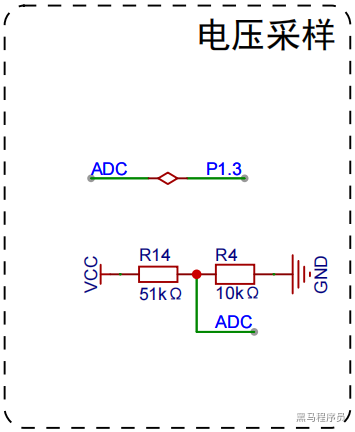
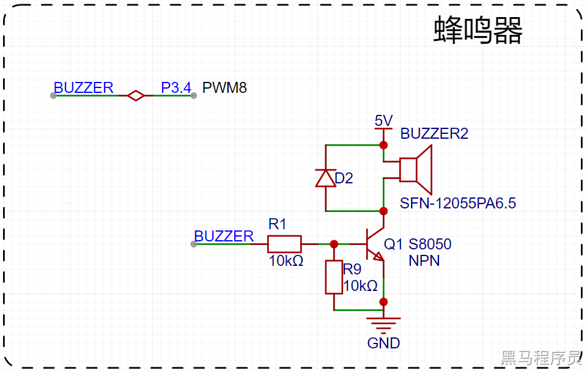

<!DOCTYPE lake>
<h2 data-lake-id="WL7ci" id="WL7ci"><span data-lake-id="u135d7190" id="u135d7190">学习目标</span></h2><ol list="u4a614e19"><li data-lake-id="u214d73e0" fid="uf60dff67" id="u214d73e0"><span data-lake-id="u4b3fc635" id="u4b3fc635">掌握小车的车灯控制</span></li><li data-lake-id="u3ae70fcf" fid="uf60dff67" id="u3ae70fcf"><span data-lake-id="u39323ee4" id="u39323ee4">掌握小车的按键事件</span></li><li data-lake-id="ud4c2f472" fid="uf60dff67" id="ud4c2f472"><span data-lake-id="u1a07c978" id="u1a07c978">掌握小车的喇叭控制</span></li><li data-lake-id="uc835a2d4" fid="uf60dff67" id="uc835a2d4"><span data-lake-id="u6f85d4b4" id="u6f85d4b4">掌握小车的电压检测</span></li><li data-lake-id="ub5c0afd6" fid="uf60dff67" id="ub5c0afd6"><span data-lake-id="u6b3cc382" id="u6b3cc382">掌握原理图的阅读</span></li><li data-lake-id="u6a56bf3a" fid="uf60dff67" id="u6a56bf3a"><span data-lake-id="u395efdc3" id="u395efdc3">掌握驱动的编写</span></li></ol><h2 data-lake-id="pA5Pi" id="pA5Pi"><span data-lake-id="u02212dd9" id="u02212dd9">学习内容</span></h2><h3 data-lake-id="yH8YZ" id="yH8YZ"><span data-lake-id="ueda45251" id="ueda45251">LED</span></h3><p data-lake-id="u99739ac2" id="u99739ac2"></p><p data-lake-id="u18dd14c0" id="u18dd14c0"><span data-lake-id="u1bceca17" id="u1bceca17">通过引脚驱动灯的开关</span></p><p data-lake-id="uba111660" id="uba111660"><span data-lake-id="u46abf12b" id="u46abf12b">​</span><br/></p><p data-lake-id="ub332b0a6" id="ub332b0a6"><strong><span data-lake-id="u79e75ae1" id="u79e75ae1">驱动编写：</span></strong></p><span class="yuque-card-unsupported">[codeblock]</span><span class="yuque-card-unsupported">[codeblock]</span><h3 data-lake-id="iAxCs" id="iAxCs"><span data-lake-id="uabd2a4bb" id="uabd2a4bb">按键</span></h3><p data-lake-id="u1460c8ed" id="u1460c8ed"></p><p data-lake-id="u08de4b40" id="u08de4b40"><strong><span data-lake-id="uce9b786e" id="uce9b786e">驱动编写：</span></strong></p><span class="yuque-card-unsupported">[codeblock]</span><span class="yuque-card-unsupported">[codeblock]</span><h3 data-lake-id="TFkJl" id="TFkJl"><br/></h3><h3 data-lake-id="goUQM" id="goUQM"><span data-lake-id="u9fc7c0ef" id="u9fc7c0ef">电压检测</span></h3><p data-lake-id="uc2b459fe" id="uc2b459fe"></p><p data-lake-id="u63fa9c06" id="u63fa9c06"><span data-lake-id="u69f2758e" id="u69f2758e">ADC测电压</span></p><p data-lake-id="ud48ff77a" id="ud48ff77a"><strong><span data-lake-id="ub71176cb" id="ub71176cb">驱动编写：</span></strong></p><span class="yuque-card-unsupported">[codeblock]</span><span class="yuque-card-unsupported">[codeblock]</span><h3 data-lake-id="oXpBQ" id="oXpBQ"><span data-lake-id="u72cda6bc" id="u72cda6bc">蜂鸣器</span></h3><p data-lake-id="ub1da9c66" id="ub1da9c66"></p><ul list="u13d757ea"><li data-lake-id="u225f752a" fid="u964e6406" id="u225f752a"><span data-lake-id="u900a5224" id="u900a5224">如果蜂鸣器采用的是无源蜂鸣器，通过指定频率和占空比的PWM进行控制。</span></li><li data-lake-id="u438d634f" fid="u964e6406" id="u438d634f"><span data-lake-id="u8ee420a9" id="u8ee420a9">如果蜂鸣器采用的是有源蜂鸣器，通电就可以响。</span></li></ul><blockquote class="lake-alert lake-alert-color3" data-lake-id="u2b5db4e8" id="u2b5db4e8"><p data-lake-id="u58bdba70" id="u58bdba70"><span data-lake-id="ucc7440dc" id="ucc7440dc">注意：</span></p><p data-lake-id="u9f39b11d" id="u9f39b11d"><span data-lake-id="u02d0b20b" id="u02d0b20b">初始化BUZZER的IO口之后，强烈建议把引脚(即P34)</span><strong><span data-lake-id="u8af7c98f" id="u8af7c98f">拉低</span></strong><span data-lake-id="ue5b03492" id="ue5b03492">，否则引脚默认输出高电平，NPN三极管会一直工作（由于没有震荡，所以蜂鸣器不响），进而三极管会一直发热。</span></p></blockquote><p data-lake-id="uf57fae67" id="uf57fae67"><strong><span data-lake-id="u52cf02f7" id="u52cf02f7">驱动编写：</span></strong></p><span class="yuque-card-unsupported">[codeblock]</span><span class="yuque-card-unsupported">[codeblock]</span><h2 data-lake-id="L3wnY" id="L3wnY"><span data-lake-id="ud7286c7d" id="ud7286c7d">练习题</span></h2><ol list="u3d3b0df0"><li data-lake-id="u84fb9d40" fid="u14950fd6" id="u84fb9d40"><span data-lake-id="u3a743cca" id="u3a743cca">通过按键来切换蜂蜜器响或者不响</span></li><li data-lake-id="u8fd70780" fid="u14950fd6" id="u8fd70780"><span data-lake-id="ubbe38245" id="ubbe38245">通过按键来控制灯的开关</span></li><li data-lake-id="u89c83b48" fid="u14950fd6" id="u89c83b48"><span data-lake-id="ufea2c991" id="ufea2c991">打印电压数据</span></li></ol>